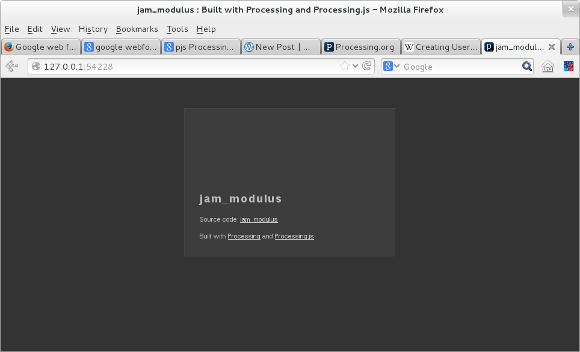
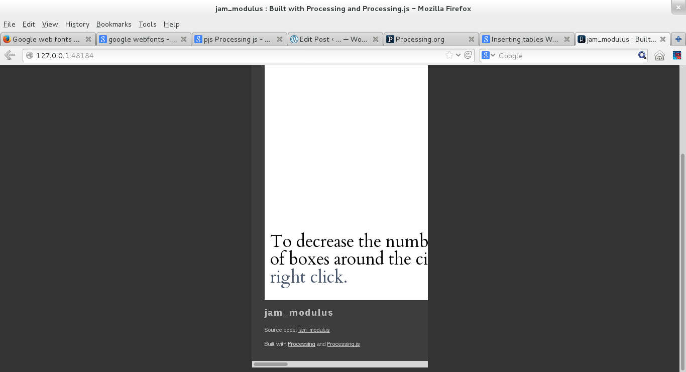

Processing JS troubleshooting
Problem |
Solution |
|
Your program, when rendered on your local server looks like this: (My program is called jam_modulus):  |
While writing the program in Java mode, have you used the size() function as defined below? size(width, height); If you have used width or height in your size() function, replace your size() function with size(window.innerWidth, window.innerHeight); When you do this, you'll get a warning about how you haven't defined dimensions for the size of your application. Remain unfazed, and click OK to see your application on the browser. If this does not work, there's a good chance that there's something syntactically wrong with your program, post a question on the #processing.js channel on irc.mozilla.org. |
|
Your program, when rendered on your local server, looks like this: (My program is called jam_modulus)  That is, only a small scrollable portion or part of your display is shown on the screen. |
In the web-export/index.html file, make the following changes to change the percentage of the canvas that is displayed on the screen.
|